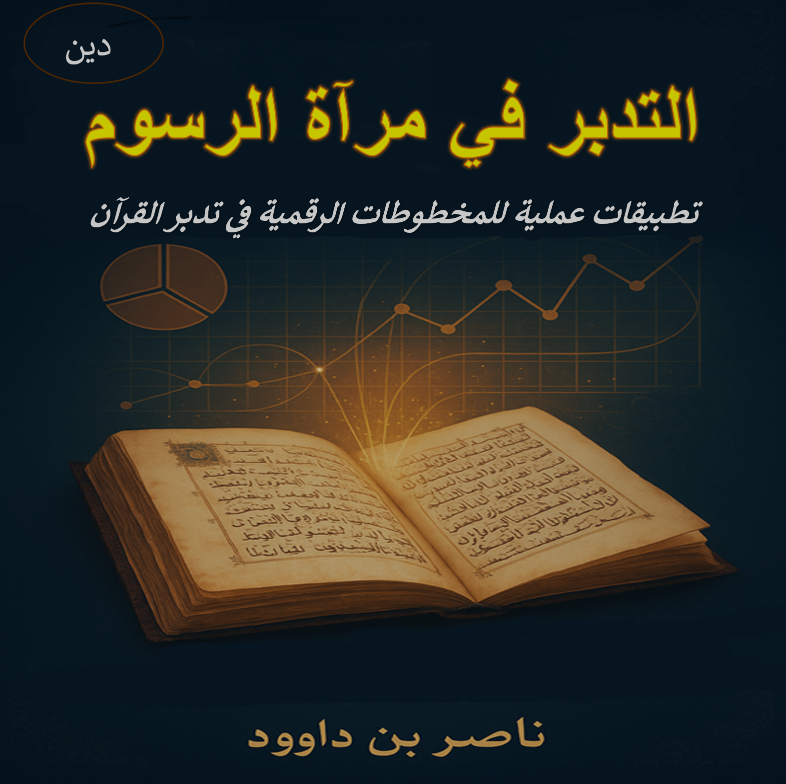

وصف الكتاب
يقدم هذا الكتاب منهجية جديدة لفهم القرآن الكريم من خلال دراسة المخطوطات القرآنية القديمة وتحليلها رقمياً، مع التركيز على دلالات الرسم العثماني وعلاقته بتدبر المعاني القرآنية.
يستند الكتاب إلى مفهوم "فقه السبع المثاني" كأساس لفهم البنية اللغوية العميقة للنص القرآني، مع تطبيقات عملية في عصر الرقمنة. يهدف إلى تمكين القارئ من التفاعل مع النص القرآني بطريقة تجمع بين الأصالة والحداثة.
الرؤية المنهجية
يعتمد الكتاب على منهجية "فقه السبع المثاني" لتحليل النص القرآني، مع التركيز على الرسم العثماني كأداة لفهم أعمق للمعاني القرآنية. يقدم الكتاب أدوات تحليلية رقمية حديثة لدراسة المخطوطات، مع أمثلة تطبيقية تجعل التدبر تجربة حية وعملية.
يجمع الكتاب بين التراث الإسلامي والتقنيات الحديثة، مقدمًا نهجًا شاملاً يساعد القارئ على استيعاب النص القرآني في سياقه التاريخي واللغوي، مع تطبيقات معاصرة.
أبرز مميزات الكتاب:
- دمج بين الدراسات القرآنية التقليدية والتقنيات الرقمية الحديثة
- تحليل معمق للرسم العثماني ودلالاته
- منهجية "فقه السبع المثاني" كأداة لفهم القرآن
- أمثلة تطبيقية من المخطوطات القرآنية
- رؤية جديدة للتعامل مع القرآن في العصر الرقمي
فهرس المحتويات
خاتمة: التدبر كمنهج حياة
في ختام هذا الكتاب، يهدف العمل إلى إحياء التدبر كمنهج حياة يربط الأمة بكتابها الكريم، من خلال الاستفادة من المخطوطات القرآنية الرقمية وتطبيقاتها العملية. يدعو الكتاب إلى نهضة فكرية تجمع بين الأصالة والمعاصرة، مما يمكن الأفراد من فهم أعمق للقرآن وتطبيقه في حياتهم اليومية.
هذا العمل دعوة لكل قارئ أن يجعل التدبر جزءًا لا يتجزأ من حياته، مستلهمًا من التراث ومستفيدًا من أدوات العصر الحديث للوصول إلى فهم حقيقي ومثمر للقرآن الكريم.
لمن هذا الكتاب؟
- الباحثون في الدراسات القرآنية: المهتمون بفهم النص القرآني عبر المخطوطات
- المهتمون بالتكنولوجيا: الراغبون في تطبيق التقنيات الرقمية في الدراسات القرآنية
- علماء اللغة: المهتمون بتحليل اللسان القرآني
- المعلمون والدعاة: الراغبون في تقديم القرآن بطريقة معاصرة
- عموم القراء: الراغبون في تعميق علاقتهم بالقرآن الكريم